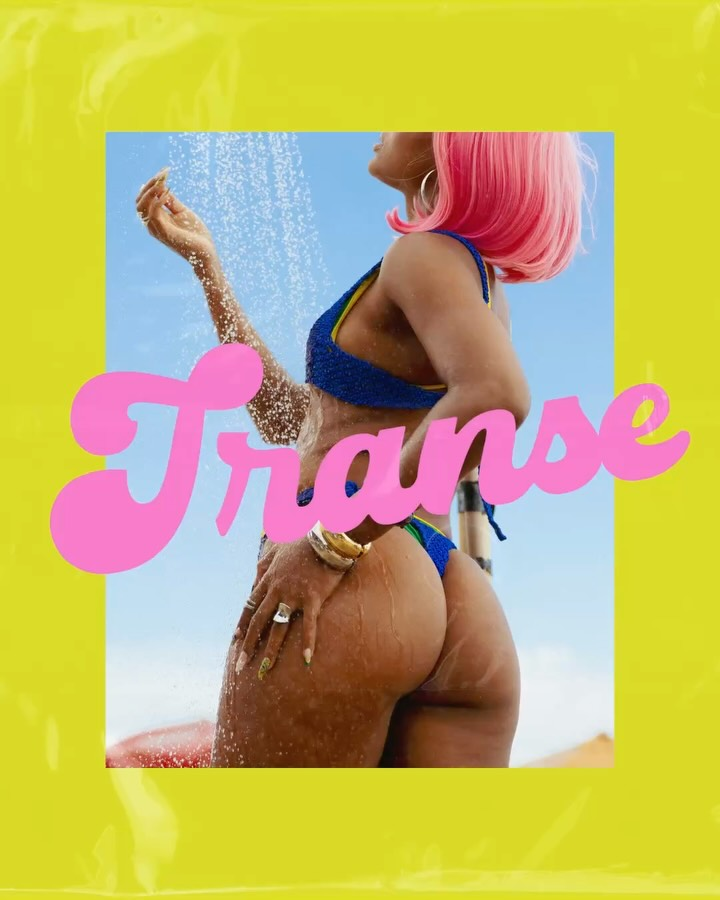
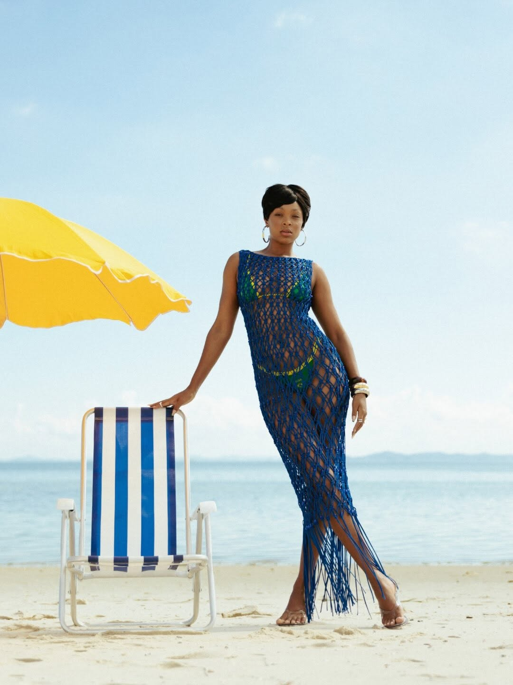
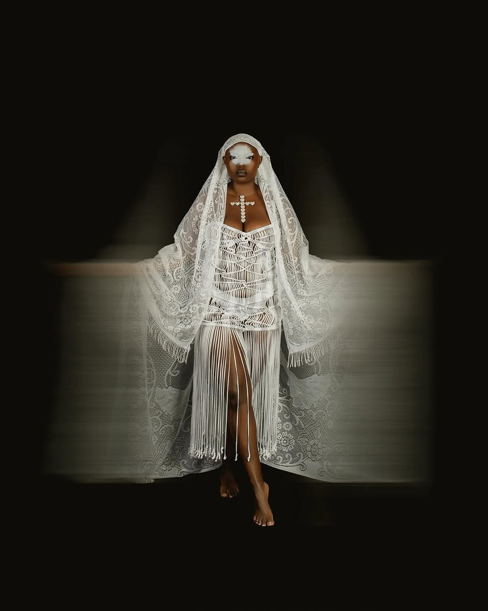
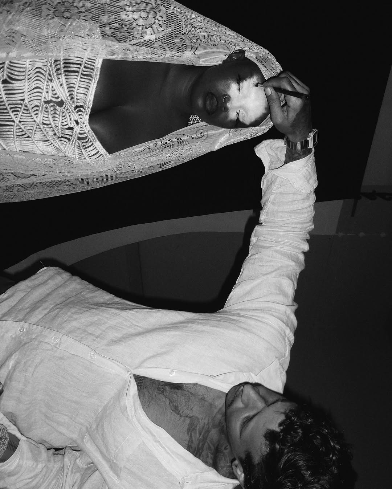
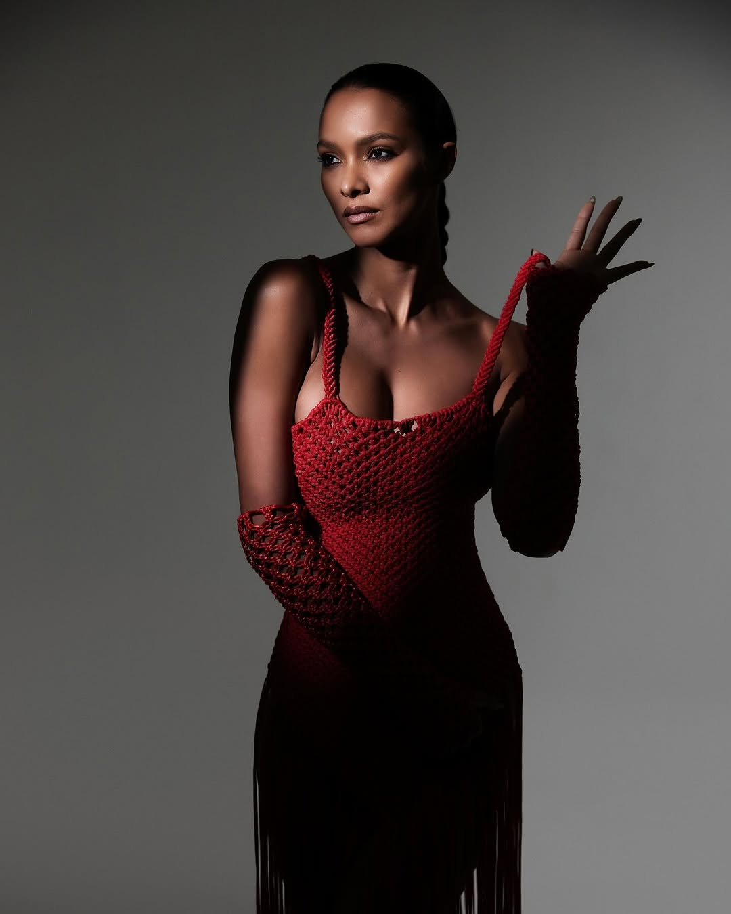

acervo • atelier • sob medida
tecendono corpo
Macramê feito à mão, nó por nó. Cada peça da CAMÔ nasce no ateliê, leva dias para ficar pronta e não se repete igual.

uma a uma
do acervo
ver todas as peças →coleções & editoriais
Cada coleção começa numa escrita e termina no corpo.

sob medida
uma peça só sua
Para um palco, um ensaio, uma formatura, um casamento na areia. Você conta a ideia, manda as referências e a peça é tecida no seu corpo.

quem veste

Galore · edição de fevereiro
Laís Ribeiro
CAMÔ no especial de moda da revista, fotografado por Higor Bastos, com styling de Carlos Esser.
styling Carlos Esser
Giovanna Ewbank
Vestindo uma peça criada originalmente para a formatura em moda da estilista.
O macramê sempre foi a minha reza materializada.
conhecer o ateliê →